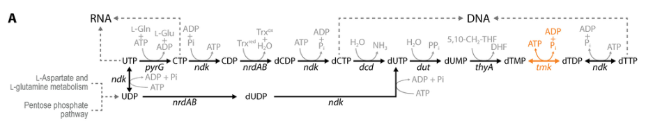

pyrG encodes CTP synthase (CTPS, EC 6.3.4.2), a glutamine-dependent amidotransferase that catalyzes the terminal step of de novo CTP biosynthesis, converting UTP to CTP using ATP and either glutamine or ammonia as nitrogen donor. It is a homotetramer in which a glutaminase (GAT) domain generates ammonia that is channeled to the synthase domain; activity is allosterically activated by GTP and feedback-inhibited by the product CTP, and the enzyme family can polymerize into cytoophidium filaments.
| GO Term | Evidence | Action | Reason |
|---|---|---|---|
|
GO:0003883
CTP synthase activity
|
IEA
GO_REF:0000120 |
ACCEPT |
Summary: CTP synthase activity is the specific core molecular function of PyrG.
Reason: UniProt assigns EC 6.3.4.2 and describes ATP-dependent amination of UTP to CTP. Falcon deep research confirms this as the terminal, glutamine-dependent step of de novo CTP biosynthesis (UTP + ATP + L-glutamine -> CTP + L-glutamate + ADP + Pi), with the protein belonging to the class I glutamine-dependent amidotransferase family. The reaction matches the GO:0003883 definition.
Supporting Evidence:
file:PSEPK/pyrG/pyrG-uniprot.txt
Catalyzes the ATP-dependent amination of UTP to CTP
file:PSEPK/pyrG/pyrG-goa.tsv
GO:0003883 CTP synthase activity
file:PSEPK/pyrG/pyrG-deep-research-falcon.md
ATP-dependent amination of UTP to form CTP
file:PSEPK/pyrG/pyrG-deep-research-falcon.md
UTP + ATP + L-glutamine → CTP + L-glutamate + ADP + Pi
|
|
GO:0004359
glutaminase activity
|
IEA
GO_REF:0000116 |
ACCEPT |
Summary: Glutaminase activity is a legitimate component activity of glutamine-dependent CTP synthase.
Reason: UniProt lists the glutamine hydrolysis reaction that supplies ammonia for CTP synthesis. Falcon deep research describes the dedicated glutaminase (GAT) domain that hydrolyzes glutamine to glutamate plus ammonia, with the liberated ammonia channeled through an intramolecular tunnel to the synthase domain. This is a bona fide component activity, not an over-annotation.
Supporting Evidence:
file:PSEPK/pyrG/pyrG-uniprot.txt
Reaction=L-glutamine + H2O = L-glutamate + NH4(+);
file:PSEPK/pyrG/pyrG-goa.tsv
GO:0004359 glutaminase activity
file:PSEPK/pyrG/pyrG-deep-research-falcon.md
hydrolyzes glutamine to glutamate + ammonia
file:PSEPK/pyrG/pyrG-deep-research-falcon.md
intramolecular (NH3) tunnel
|
|
GO:0005829
cytosol
|
IEA
GO_REF:0000118 |
KEEP AS NON CORE |
Summary: Cytosol is plausible context for a soluble bacterial nucleotide biosynthetic enzyme.
Reason: The location is useful but not the defining function. Falcon deep research notes that bacterial CTPS is best supported as an intracellular, soluble/cytosolic enzyme, consistent with this annotation.
Supporting Evidence:
file:PSEPK/pyrG/pyrG-goa.tsv
GO:0005829 cytosol
file:PSEPK/pyrG/pyrG-deep-research-falcon.md
intracellular, soluble/cytosolic enzyme
|
|
GO:0006221
pyrimidine nucleotide biosynthetic process
|
IEA
GO_REF:0000002 |
MARK AS OVER ANNOTATED |
Summary: Pyrimidine nucleotide biosynthetic process is broader than PyrG's direct CTP biosynthetic role.
Reason: The de novo CTP biosynthetic process annotation is more specific and should be preferred.
Supporting Evidence:
file:PSEPK/pyrG/pyrG-uniprot.txt
CTP biosynthesis via de novo pathway
file:PSEPK/pyrG/pyrG-goa.tsv
GO:0006221 pyrimidine nucleotide biosynthetic process
|
|
GO:0006241
CTP biosynthetic process
|
IEA
GO_REF:0000120 |
MARK AS OVER ANNOTATED |
Summary: CTP biosynthetic process is correct but less specific than the de novo CTP pathway annotation.
Reason: UniProt places PyrG in the de novo route from UDP, so GO:0044210 carries the more precise process annotation.
Supporting Evidence:
file:PSEPK/pyrG/pyrG-uniprot.txt
CTP biosynthesis via de novo pathway
file:PSEPK/pyrG/pyrG-goa.tsv
GO:0006241 CTP biosynthetic process
|
|
GO:0019856
pyrimidine nucleobase biosynthetic process
|
IEA
GO_REF:0000118 |
MARK AS OVER ANNOTATED |
Summary: Pyrimidine nucleobase biosynthesis is a broad downstream category for PyrG.
Reason: PyrG's direct pathway contribution is CTP synthesis, not general pyrimidine nucleobase biosynthesis.
Supporting Evidence:
file:PSEPK/pyrG/pyrG-goa.tsv
GO:0019856 pyrimidine nucleobase biosynthetic process
|
|
GO:0042802
identical protein binding
|
IEA
GO_REF:0000118 |
KEEP AS NON CORE |
Summary: Identical protein binding reflects the obligate homotetrameric assembly of CTP synthase but is a generic binding term that is less informative than the catalytic activity itself.
Reason: The protein functions as an enzyme; self-association is the structural basis of its activity rather than an independent function. UniProt records a homotetramer, and falcon deep research describes how substrates (ATP/UTP) favor formation of the active tetramer, with the enzyme also able to assemble into higher-order filaments (cytoophidia). The self-binding underpins catalysis and allosteric regulation, so it is retained as non-core supporting context rather than as the defining molecular function.
Supporting Evidence:
file:PSEPK/pyrG/pyrG-goa.tsv
GO:0042802 identical protein binding
file:PSEPK/pyrG/pyrG-uniprot.txt
SUBUNIT: Homotetramer.
file:PSEPK/pyrG/pyrG-deep-research-falcon.md
favor formation of the **active tetramer**
|
|
GO:0044210
'de novo' CTP biosynthetic process
|
IEA
GO_REF:0000120 |
ACCEPT |
Summary: The de novo CTP biosynthetic process is the most specific pathway annotation in GOA.
Reason: UniProt states that PyrG performs step 2 of 2 in the CTP de novo biosynthesis route. Falcon deep research independently places pyrG/CTPS as the terminal enzyme of de novo CTP synthesis, with a KT2440 pathway schematic showing the UTP-to-CTP step feeding RNA precursor pools.
Supporting Evidence:
file:PSEPK/pyrG/pyrG-uniprot.txt
CTP from UDP: step 2/2
file:PSEPK/pyrG/pyrG-goa.tsv
GO:0044210 'de novo' CTP biosynthetic process
file:PSEPK/pyrG/pyrG-deep-research-falcon.md
terminal enzyme of de novo CTP synthesis
file:PSEPK/pyrG/pyrG-deep-research-falcon.md
pyrG/CTPS is the step converting UTP to CTP
|
|
GO:0097268
cytoophidium
|
IEA
GO_REF:0000117 |
KEEP AS NON CORE |
Summary: Cytoophidium is a conserved higher-order assembly state of CTP synthase but is not the core activity, and has not been demonstrated for KT2440 PyrG itself.
Reason: This ARBA-derived cellular component is not needed to define PyrG function in KT2440. The cytoophidium is by definition a filamentous structure built primarily of polymerized CTPS, so the term is biologically apt for this protein family; falcon deep research notes that CTPS can form filaments/cytoophidia conserved from bacteria to humans. However, no direct imaging evidence of filamentation was retrieved for P. putida PyrG specifically, so this remains a plausible family-level assembly state kept as non-core context.
Supporting Evidence:
file:PSEPK/pyrG/pyrG-goa.tsv
GO:0097268 cytoophidium
file:PSEPK/pyrG/pyrG-deep-research-falcon.md
CTPS can form **filaments/cytoophidia**
|
Q: Does KT2440 PyrG form cytoophidium-like assemblies under nutrient limitation, or is that annotation only inferred from broader CTP synthase biology?
Experiment: Tag endogenous PyrG and image cells under nucleotide limitation while assaying CTP synthase activity and CTP feedback inhibition in vitro.
Type: cell imaging and enzyme regulation assay
The research report should be a detailed narrative explaining the function, biological processes, and localization of the gene product. Citations should be given for all claims.
You should prioritize authoritative reviews and primary scientific literature when conducting research. You can supplement
this with annotations you find in gene/protein databases, but these can be outdated or inaccurate.
We are specifically interested in the primary function of the gene - for enzymes, what reaction is catalyzed, and what is the substrate specificity? For transporters, what is the substrate? For structural proteins or adapters, what is the broader structural role? For signaling molecules, what is the role in the pathway.
We are interested in where in or outside the cell the gene product carries out its function.
We are also interested in the signaling or biochemical pathways in which the gene functions. We are less interested in broad pleiotropic effects, except where these elucidate the precise role.
Include evidence where possible. We are interested in both experimental evidence as well as inference from structure, evolution, or bioinformatic analysis. Precise studies should be prioritized over high-throughput, where available.
The UniProt entry Q88MG1 corresponds to pyrG in Pseudomonas putida strain KT2440 (ordered locus name PP_1610 per user-provided UniProt context). In KT2440 pathway context, pyrG is explicitly labeled as CTP synthase (CTPS), supporting that the correct protein is being annotated and that “pyrG” here is not an unrelated gene symbol used in other organisms. (wirth2023recursivegenomeengineering pages 2-5, wirth2023recursivegenomeengineering media 8cd03722)
CTP synthase (CTPS; EC 6.3.4.2) is the enzyme that catalyzes the final step of de novo cytidine-5′-triphosphate (CTP) biosynthesis, i.e., ATP-dependent amination of UTP to form CTP. This step is critical because it is the only de novo route that generates the cytosine nucleobase at the triphosphate level in many organisms. (bearne2022gtpdependentregulationof pages 1-2)
A Pseudomonas-focused study reports the overall glutamine-dependent CTPS reaction as:
UTP + ATP + L-glutamine → CTP + L-glutamate + ADP + Pi. (patel2001astudyof pages 103-106)
This chemistry is consistent with CTPS being a class I glutamine-dependent amidotransferase, where glutamine provides ammonia for amination. (bearne2022gtpdependentregulationof pages 1-2)
Some CTPS homologs can catalyze dUTP → dCTP in vitro/under specific experimental regimes, and this broader capability has been structurally investigated in recent work on bifunctional CTPS/dCTPS, but this should be treated as a property of certain CTPS enzymes rather than the default functional assignment for P. putida PyrG without direct biochemical confirmation. (guo2023structuralbasisof pages 22-29)
CTPS enzymes are two-domain fusion proteins comprising:
- a glutaminase (GAT) domain that hydrolyzes glutamine to glutamate + ammonia, and
- a synthase/ammonia ligase (amidoligase) domain that uses ATP to activate UTP for amination.
A review focused on CTPS regulation emphasizes that glutamine hydrolysis occurs in the GAT domain and the liberated ammonia is transferred through an intramolecular (NH3) tunnel to the synthase domain for ATP-dependent amination of UTP to yield CTP. (bearne2022gtpdependentregulationof pages 1-2)
Mechanistically, ATP-dependent phosphorylation of UTP generates a reactive intermediate (often described as a phosphorylated UTP species) that then reacts with ammonia; this intermediate chemistry is a recurring mechanistic theme in CTPS discussions. (zhu2024advancesinhuman pages 5-6, bearne2022gtpdependentregulationof pages 2-4)
For bacteria, CTPS is best supported as an intracellular, soluble/cytosolic enzyme. In addition, CTPS can polymerize into intracellular filaments (“cytoophidia”) across domains of life (including bacteria), which can alter its spatial distribution and regulatory state. (zhu2024advancesinhuman pages 4-5, zhang2024theimpactof pages 1-3)
A KT2440 pathway schematic situates pyrG/CTPS in pyrimidine nucleotide metabolism: pyrG/CTPS is the step converting UTP to CTP, feeding RNA precursor pools and supporting downstream formation of deoxyribonucleotides (dCTP/dTTP etc.). (wirth2023recursivegenomeengineering pages 2-5, wirth2023recursivegenomeengineering media 8cd03722)
Although KT2440-specific operon context was not retrieved here, Pseudomonas-focused work in P. aeruginosa highlights that pyrG can be positioned in broader metabolic context linking CTP availability to other envelope-associated pathways (e.g., Kdo/LPS-related metabolism), illustrating why CTP homeostasis is often tightly controlled in Gram-negative bacteria. (patel2001astudyof pages 103-106)
CTPS is unusual among glutamine amidotransferases in that it requires/uses GTP as an allosteric effector to activate the glutaminase (GAT) domain for efficient glutamine hydrolysis. A dedicated review states that CTPS “requires an allosteric effector (GTP) to activate the GAT domain for efficient glutamine hydrolysis,” and links GTP binding to conformational changes that also impact NH3 tunnel assembly and coupling of the two active sites. (bearne2022gtpdependentregulationof pages 1-2)
Mechanistic detail from the same review indicates that GTP binding promotes conformational rearrangements near loops involved in catalysis and NH3 translocation (e.g., loops contributing to the NH3 tunnel), thereby coordinating glutamine hydrolysis with CTP formation. (bearne2022gtpdependentregulationof pages 12-14, bearne2022gtpdependentregulationof pages 5-7)
CTPS is product-regulated: CTP acts as a feedback inhibitor/product regulator. The GTP-focused review notes CTP can act as a feedback inhibitor and is linked to oligomerization effects (e.g., inducing tetramerization and promoting inactive states). (bearne2022gtpdependentregulationof pages 1-2)
A 2024 review of glutamine-hydrolyzing synthetases provides quantitative context (from human CTPS1): an IC50 ~40 μM CTP at 100 μM UTP, illustrating the strong potential for CTP to control flux by competing with UTP at the synthetase domain. (zhu2024advancesinhuman pages 4-5)
While that IC50 is not P. putida-specific, it is consistent with the qualitative statement that CTP is a physiologically relevant feedback regulator of CTPS-family enzymes. (bearne2022gtpdependentregulationof pages 1-2)
CTPS regulation occurs across multiple organizational scales:
- At the quaternary structure level, substrates (ATP/UTP) favor formation of the active tetramer, whereas product conditions can stabilize less active states. (bearne2022gtpdependentregulationof pages 1-2, guo2023filamentationandinhibition pages 1-7)
- At the supramolecular level, CTPS can form filaments/cytoophidia, an evolutionarily conserved phenomenon with regulatory consequences. (bremer2023amodelindustrial pages 6-8, zhang2024theimpactof pages 1-3)
A 2023 structural/biochemical preprint focusing on prokaryotic CTPS reports that E. coli CTPS is inactive as a dimer in dilute solution, becomes active as a tetramer with UTP/ATP, and that product CTP shifts it to an inactive tetramer; in E. coli specifically, product CTP is associated with formation of large-scale inhibitory filaments. (guo2023filamentationandinhibition pages 1-7)
The same 2023 study provides quantitative inhibition evidence: relative initial velocity V0 = 0.66 with CTP alone, dropping to 0.46 with CTP + NADH and 0.44 with CTP + adenine, indicating synergistic inhibition in vitro. (guo2023filamentationandinhibition pages 24-31)
The 2023 prokaryotic CTPS preprint reports cryo-EM of an E. coli CTPS filament complex (CTP, NADH, DON) at 2.8 Å and discusses the ammonia tunnel becoming solvent-accessible upon DON binding, supporting a model where inhibitors can disrupt or gate ammonia delivery. (guo2023filamentationandinhibition pages 1-7)
This work also frames prokaryotic CTPS as a selective inhibitor design target, noting that distinct binding modes/interfaces may enable prokaryote-selective CTPS inhibition strategies. (guo2023filamentationandinhibition pages 1-7)
A 2024 review on cytoophidium formation synthesizes evidence that CTPS cytoophidia are dynamic, regulated by metabolic/developmental cues, and conserved from bacteria to humans. It highlights the concept of cytoophidia as a form of intracellular compartmentation of metabolic enzymes, with diverse proposed cellular roles. (zhang2024theimpactof pages 1-3)
A 2024 review provides quantitative metabolite context (example cellular nucleotide concentrations: UTP 253 μM, CTP 91 μM) and emphasizes that filamentation can have different functional consequences across organisms/isoforms; notably, E. coli CTPS polymers have been associated with reduced activity via stabilization of an inactive conformation. (zhu2024advancesinhuman pages 4-5)
CTPS/PyrG is repeatedly positioned as a potential therapeutic target in pathogens, because it provides an essential nucleotide (CTP) required for nucleic acids and, indirectly, for lipid-linked processes. A 2023 prokaryotic CTPS study explicitly frames CTPS as a potential therapeutic target for infections by prokaryotic pathogens (and even viruses via host CTPS), and discusses prokaryote-selective inhibition. (guo2023filamentationandinhibition pages 1-7)
A 2024 cytoophidia review highlights bacterial CTPS inhibitors (e.g., thiophenecarboxamide derivatives reported to inhibit Mycobacterium tuberculosis PyrG) as examples of CTPS-family targeting. (zhang2024theimpactof pages 8-9, zhang2024theimpactof pages 12-13)
CTP production capacity is a core element of nucleotide homeostasis; therefore, pyrG is a relevant gene in genome engineering/minimal-genome and chassis optimization discussions. For example, in Bacillus subtilis, CTPS (PyrG) is discussed as central to growth homeostasis and controlled by transcriptional mechanisms, and its filamentation (cytoophidia) is described as having consequences for spatial distribution and activity regulation—principles that synthetic biologists must consider when engineering robust growth or nucleotide-demanding pathways. (bremer2023amodelindustrial pages 6-8)
For P. putida KT2440 specifically, pyrG appears in pathway schematics used in genome engineering work, reinforcing its use as a reference “core metabolism” function when redesigning nucleotide metabolism modules. (wirth2023recursivegenomeengineering pages 2-5, wirth2023recursivegenomeengineering media 8cd03722)
Two points emerge consistently from authoritative syntheses:
1) Allosteric coupling between glutamine hydrolysis and UTP amination is central to CTPS function, and GTP is a key signal that gates this coupling while also influencing NH3 tunnel formation/stability. (bearne2022gtpdependentregulationof pages 1-2, bearne2022gtpdependentregulationof pages 12-14)
2) Higher-order assembly (cytoophidia/filaments) is increasingly viewed as a regulatory layer, not merely a structural curiosity. Reviews emphasize that filamentation is conserved and affects enzyme regulation and spatial organization, while prokaryotic structural work indicates product-bound filaments can be inhibitory in bacteria like E. coli. (bremer2023amodelindustrial pages 6-8, guo2023filamentationandinhibition pages 1-7)
The following quantitative values were directly retrieved from recent sources:
- CTP feedback inhibition example: human CTPS1 IC50 for CTP ~40 μM at 100 μM UTP (illustrative of strong product feedback; not P. putida-specific). (zhu2024advancesinhuman pages 4-5)
- Example cellular nucleotide levels (contextual): UTP 253 μM and CTP 91 μM (organism/context not restricted to P. putida; presented as general physiological context in a 2024 review). (zhu2024advancesinhuman pages 4-5)
- Prokaryotic inhibition synergy (E. coli CTPS assay): relative initial velocities V0 = 0.66 (CTP), 0.46 (CTP+NADH), 0.44 (CTP+adenine). (guo2023filamentationandinhibition pages 24-31)
- Structural resolution: prokaryotic CTPS filament complex resolved at 2.8 Å by cryo-EM in a 2023 preprint. (guo2023filamentationandinhibition pages 1-7)
The table below consolidates the functional annotation items, evidence types, and limitations (e.g., where evidence is CTPS-family-level rather than KT2440/Q88MG1-specific).
| Annotation item | Summary statement | Evidence type | Key citations with year and URL | Notes/limitations |
|---|---|---|---|---|
| Identity / target verification | In Pseudomonas putida KT2440, pyrG is identified as CTP synthase (CTPS) in pyrimidine nucleotide biosynthesis, matching UniProt Q88MG1 functional annotation (CTP synthase family; EC 6.3.4.2) (wirth2023recursivegenomeengineering pages 2-5, wirth2023recursivegenomeengineering media 8cd03722). | Primary + pathway schematic | Wirth et al., 2023, mBio, https://doi.org/10.1128/mbio.01081-23 (wirth2023recursivegenomeengineering pages 2-5, wirth2023recursivegenomeengineering media 8cd03722) | The retrieved evidence verifies the function in KT2440, but the specific locus tag PP_1610 was not explicitly shown in the extracted text/images. |
| Reaction / EC number | CTPS catalyzes the final step of de novo CTP biosynthesis, i.e. ATP-dependent amination of UTP to CTP using nitrogen from L-glutamine; reported overall reaction: UTP + ATP + L-glutamine → CTP + L-glutamate + ADP + Pi; EC 6.3.4.2 (bearne2022gtpdependentregulationof pages 1-2, patel2001astudyof pages 103-106, zhu2024advancesinhuman pages 2-4). | Review + primary/dissertation | Bearne et al., 2022, https://doi.org/10.3390/biom12050647 (bearne2022gtpdependentregulationof pages 1-2); Patel, 2001, https://doi.org/10.12794/metadc3038 (patel2001astudyof pages 103-106); Zhu et al., 2024, https://doi.org/10.3389/fchbi.2024.1410435 (zhu2024advancesinhuman pages 2-4) | Reaction chemistry is well established, but not experimentally characterized here for purified P. putida PyrG specifically. |
| Substrates and products | Canonical substrates are UTP, ATP, and glutamine; products are CTP, ADP, phosphate, and glutamate. Some CTPS enzymes can also support dUTP → dCTP under experimental conditions, but this should be treated as a broader CTPS property rather than the default annotation for P. putida PyrG (patel2001astudyof pages 103-106, guo2023structuralbasisof pages 22-29). | Primary + review | Patel, 2001, https://doi.org/10.12794/metadc3038 (patel2001astudyof pages 103-106); Guo et al., 2023 preprint, https://doi.org/10.1101/2023.02.19.529158 (guo2023structuralbasisof pages 22-29) | dCTP synthase activity is not demonstrated for Q88MG1 and should not replace the canonical CTPS annotation. |
| Pathway role | PyrG/CTPS sits at the branch producing CTP/UTP pools for RNA and for downstream DNA precursor formation; it is the terminal enzyme of de novo CTP synthesis in pyrimidine metabolism (wirth2023recursivegenomeengineering pages 2-5, bearne2022gtpdependentregulationof pages 1-2, bremer2023amodelindustrial pages 6-8). | Primary + review | Wirth et al., 2023, https://doi.org/10.1128/mbio.01081-23 (wirth2023recursivegenomeengineering pages 2-5); Bearne et al., 2022, https://doi.org/10.3390/biom12050647 (bearne2022gtpdependentregulationof pages 1-2); Bremer et al., 2023, https://doi.org/10.1111/1751-7915.14257 (bremer2023amodelindustrial pages 6-8) | Pathway placement is supported for KT2440, but most mechanistic details come from non-P. putida systems. |
| Protein family / domains | CTPS is a class I glutamine amidotransferase comprising a glutaminase/GAT domain and a synthetase/ammonia ligase (amidoligase) domain in one polypeptide; ammonia generated in the GAT site is delivered to the synthetase site (bearne2022gtpdependentregulationof pages 1-2, zhu2024advancesinhuman pages 2-4, bearne2022gtpdependentregulationof pages 12-14). | Review | Bearne et al., 2022, https://doi.org/10.3390/biom12050647 (bearne2022gtpdependentregulationof pages 1-2, bearne2022gtpdependentregulationof pages 12-14); Zhu et al., 2024, https://doi.org/10.3389/fchbi.2024.1410435 (zhu2024advancesinhuman pages 2-4) | Domain architecture aligns with UniProt/InterPro context supplied by the user; no P. putida-specific structure was retrieved. |
| Key catalytic / structural residues | Key conserved features include a glutaminase catalytic triad Cys-His-Glu (example numbering in one review: Cys399-His526-Glu528) and a P-loop/GX3GXGK motif in the synthetase domain for ATP/Mg2+ handling; residues/loops around the GTP site and NH3 tunnel (L2/L4/L11/L13) control catalysis and coupling (zhu2024advancesinhuman pages 4-5, bearne2022gtpdependentregulationof pages 12-14, bearne2022gtpdependentregulationof pages 5-7). | Review | Zhu et al., 2024, https://doi.org/10.3389/fchbi.2024.1410435 (zhu2024advancesinhuman pages 4-5); Bearne et al., 2022, https://doi.org/10.3390/biom12050647 (bearne2022gtpdependentregulationof pages 12-14, bearne2022gtpdependentregulationof pages 5-7) | Residue numbering cited is from other CTPS homologs, not directly from P. putida Q88MG1. |
| Ammonia channeling / tunnel | CTPS uses an intramolecular ammonia tunnel to transfer ammonia from the glutaminase domain to the synthetase domain; GTP binding helps assemble/gate this tunnel and reduce ammonia leakage (bearne2022gtpdependentregulationof pages 1-2, bearne2022gtpdependentregulationof pages 2-4, bearne2022gtpdependentregulationof pages 12-14). | Review | Bearne et al., 2022, https://doi.org/10.3390/biom12050647 (bearne2022gtpdependentregulationof pages 1-2, bearne2022gtpdependentregulationof pages 2-4, bearne2022gtpdependentregulationof pages 12-14) | Strong mechanistic support exists, but direct tunnel measurements were not retrieved for P. putida PyrG. |
| Regulation: GTP activation | CTPS is unusual among glutamine amidotransferases in requiring GTP as an allosteric effector to stimulate efficient glutamine hydrolysis; GTP enhances glutaminase activity and helps coordinate ammonia transfer, though very high GTP can become inhibitory in some systems (bearne2022gtpdependentregulationof pages 1-2, bearne2022gtpdependentregulationof pages 15-17, bearne2022gtpdependentregulationof pages 4-5). | Review | Bearne et al., 2022, https://doi.org/10.3390/biom12050647 (bearne2022gtpdependentregulationof pages 1-2, bearne2022gtpdependentregulationof pages 15-17, bearne2022gtpdependentregulationof pages 4-5) | This is a conserved CTPS property inferred for PyrG; no P. putida-specific GTP kinetics were retrieved. |
| Regulation: CTP feedback | CTP is a feedback inhibitor/product regulator of CTPS, including competition with UTP at the synthetase site and promotion of inactive/product-bound states; one review cites a human CTPS1 IC50 ~40 μM at 100 μM UTP, illustrating strong feedback control (bearne2022gtpdependentregulationof pages 1-2, zhu2024advancesinhuman pages 4-5). | Review + structural/biochemical | Bearne et al., 2022, https://doi.org/10.3390/biom12050647 (bearne2022gtpdependentregulationof pages 1-2); Zhu et al., 2024, https://doi.org/10.3389/fchbi.2024.1410435 (zhu2024advancesinhuman pages 4-5) | Quantitative IC50 is not from P. putida; use qualitatively for annotation, not as a species-specific parameter. |
| Oligomerization / filamentation | CTPS transitions among dimer/tetramer states and can assemble into filaments/cytoophidia. In bacteria such as E. coli, product-bound filaments can stabilize an inactive state and reduce activity; filamentation is therefore relevant as a regulatory property of bacterial CTPS (guo2023filamentationandinhibition pages 1-7, guo2023filamentationandinhibition pages 24-31, bremer2023amodelindustrial pages 6-8). | Primary preprint + review | Guo et al., 2023 preprint, https://doi.org/10.1101/2023.10.19.563106 (guo2023filamentationandinhibition pages 1-7, guo2023filamentationandinhibition pages 24-31); Bremer et al., 2023, https://doi.org/10.1111/1751-7915.14257 (bremer2023amodelindustrial pages 6-8) | No direct evidence was retrieved for filamentation of P. putida PyrG itself; this is an informed family-level inference. |
| Localization | The best-supported localization is intracellular/cytosolic. When polymerized, CTPS forms intracellular filamentous cytoophidia in bacteria and other organisms (zhu2024advancesinhuman pages 4-5, bremer2023amodelindustrial pages 6-8, zhang2024theimpactof pages 1-3). | Review | Zhu et al., 2024, https://doi.org/10.3389/fchbi.2024.1410435 (zhu2024advancesinhuman pages 4-5); Bremer et al., 2023, https://doi.org/10.1111/1751-7915.14257 (bremer2023amodelindustrial pages 6-8); Zhang & Liu, 2024, https://doi.org/10.3390/ijms251810058 (zhang2024theimpactof pages 1-3) | No signal peptide, membrane, or extracellular evidence was retrieved; localization remains inferred as soluble cytosolic enzyme in P. putida. |
| Genetic context / operon information | In Pseudomonas aeruginosa, pyrG is reported as the first gene of a tricistronic operon with kdsA and eno, linking CTP supply to Kdo/LPS-associated metabolism (patel2001astudyof pages 103-106). | Primary/dissertation | Patel, 2001, https://doi.org/10.12794/metadc3038 (patel2001astudyof pages 103-106) | This operon context is not shown for P. putida KT2440 in the retrieved evidence and should not be transferred uncritically. |
| Pyrimidine pathway regulation in Pseudomonas | Work in Pseudomonas aeruginosa used pyrG mutants to manipulate UTP/CTP pools and study regulation of other pyr genes, supporting pyrG as a control point for pyrimidine homeostasis (patel2001astudyof pages 1-8). | Primary/dissertation | Patel, 2001, https://doi.org/10.12794/metadc3038 (patel2001astudyof pages 1-8) | Useful biological context for the genus, but not direct evidence for P. putida KT2440 gene regulation. |
| Essentiality notes | The retrieved KT2440 literature explicitly highlights pyrG/CTPS in the nucleotide pathway map but does not directly test pyrG essentiality in P. putida here. In other bacteria, CTPS/PyrG is described as central to growth homeostasis and conserved in minimal genomes (wirth2023recursivegenomeengineering pages 2-5, bremer2023amodelindustrial pages 6-8). | Primary + review | Wirth et al., 2023, https://doi.org/10.1128/mbio.01081-23 (wirth2023recursivegenomeengineering pages 2-5); Bremer et al., 2023, https://doi.org/10.1111/1751-7915.14257 (bremer2023amodelindustrial pages 6-8) | Essentiality for Q88MG1 in KT2440 should be described cautiously as likely/important, not definitively proven from the retrieved evidence. |
| Applications / targeting | CTPS/PyrG is an active drug-target and inhibitor-design candidate in bacteria and other organisms. Retrieved 2023–2024 sources mention thiophenecarboxamide derivatives against Mycobacterium tuberculosis PyrG, DON, NADH/adenine synergy, gemcitabine-5'-triphosphate, and broader CTPS1-targeting programs; these reinforce PyrG as a tractable catalytic target (guo2023filamentationandinhibition pages 24-31, zhang2024theimpactof pages 8-9, zhu2024advancesinhuman pages 4-5, zhang2024theimpactof pages 12-13). | Primary preprint + reviews | Guo et al., 2023 preprint, https://doi.org/10.1101/2023.10.19.563106 (guo2023filamentationandinhibition pages 24-31); Zhang & Liu, 2024, https://doi.org/10.3390/ijms251810058 (zhang2024theimpactof pages 8-9, zhang2024theimpactof pages 12-13); Zhu et al., 2024, https://doi.org/10.3389/fchbi.2024.1410435 (zhu2024advancesinhuman pages 4-5) | These applications are mostly not P. putida-specific, but they support the biochemical relevance and tractability of the enzyme family. |
Table: This table summarizes the current functional annotation evidence for Pseudomonas putida KT2440 pyrG (UniProt Q88MG1), including reaction chemistry, pathway role, regulation, localization, and translational relevance. It distinguishes direct KT2440 evidence from broader CTPS-family inferences and flags limitations where data are not species-specific.
Within the retrieved literature set, there is strong support that pyrG encodes CTPS in KT2440 and robust mechanistic understanding from other organisms. However, several KT2440-specific details were not directly retrieved here:
- Direct biochemical characterization (Km/kcat; GTP activation constants; CTP IC50) for purified P. putida PyrG.
- Direct imaging evidence that P. putida PyrG forms cytoophidia in vivo.
- Direct essentiality tests for pyrG in KT2440 (although strong functional arguments and cross-bacterial evidence support it as highly important/likely essential under many growth regimes).
Accordingly, the safest high-confidence functional annotation for Q88MG1 is: a cytosolic CTPS (EC 6.3.4.2) catalyzing the UTP→CTP amination using glutamine-derived ammonia, with regulation expected to include GTP allosteric activation and CTP feedback, and potential for filamentation-based regulation consistent with the CTPS family. (wirth2023recursivegenomeengineering media 8cd03722, bearne2022gtpdependentregulationof pages 1-2, patel2001astudyof pages 103-106, guo2023filamentationandinhibition pages 1-7)
References
(wirth2023recursivegenomeengineering pages 2-5): Nicolas T. Wirth, Katja Rohr, Antoine Danchin, and Pablo I. Nikel. Recursive genome engineering decodes the evolutionary origin of an essential thymidylate kinase activity in pseudomonas putida kt2440. mBio, Oct 2023. URL: https://doi.org/10.1128/mbio.01081-23, doi:10.1128/mbio.01081-23. This article has 19 citations and is from a domain leading peer-reviewed journal.
(wirth2023recursivegenomeengineering media 8cd03722): Nicolas T. Wirth, Katja Rohr, Antoine Danchin, and Pablo I. Nikel. Recursive genome engineering decodes the evolutionary origin of an essential thymidylate kinase activity in pseudomonas putida kt2440. mBio, Oct 2023. URL: https://doi.org/10.1128/mbio.01081-23, doi:10.1128/mbio.01081-23. This article has 19 citations and is from a domain leading peer-reviewed journal.
(bearne2022gtpdependentregulationof pages 1-2): Stephen L. Bearne, Chen-Jun Guo, and Ji-Long Liu. Gtp-dependent regulation of ctp synthase: evolving insights into allosteric activation and nh3 translocation. Biomolecules, 12:647, Apr 2022. URL: https://doi.org/10.3390/biom12050647, doi:10.3390/biom12050647. This article has 17 citations.
(patel2001astudyof pages 103-106): Seema R. Patel. A study of the pyrimidine biosynthesis pathway and its regulation in two distinct organisms: methanococcus jannaschii and pseudomonas aeruginosa. Unknown journal, Dec 2001. URL: https://doi.org/10.12794/metadc3038, doi:10.12794/metadc3038. This article has 0 citations.
(guo2023structuralbasisof pages 22-29): Chenghao Guo, Zherong Zhang, Jiale Zhong, and Ji-Long Liu. Structural basis of bifunctional ctp/dctp synthase. BioRxiv, 436:168750-168750, Feb 2023. URL: https://doi.org/10.1101/2023.02.19.529158, doi:10.1101/2023.02.19.529158. This article has 7 citations.
(zhu2024advancesinhuman pages 5-6): Wen Zhu, Alanya. J. Nardone, and Lucciano A. Pearce. Advances in human glutamine-hydrolyzing synthetases and their therapeutic potential. Frontiers in Chemical Biology, Jun 2024. URL: https://doi.org/10.3389/fchbi.2024.1410435, doi:10.3389/fchbi.2024.1410435. This article has 2 citations.
(bearne2022gtpdependentregulationof pages 2-4): Stephen L. Bearne, Chen-Jun Guo, and Ji-Long Liu. Gtp-dependent regulation of ctp synthase: evolving insights into allosteric activation and nh3 translocation. Biomolecules, 12:647, Apr 2022. URL: https://doi.org/10.3390/biom12050647, doi:10.3390/biom12050647. This article has 17 citations.
(zhu2024advancesinhuman pages 4-5): Wen Zhu, Alanya. J. Nardone, and Lucciano A. Pearce. Advances in human glutamine-hydrolyzing synthetases and their therapeutic potential. Frontiers in Chemical Biology, Jun 2024. URL: https://doi.org/10.3389/fchbi.2024.1410435, doi:10.3389/fchbi.2024.1410435. This article has 2 citations.
(zhang2024theimpactof pages 1-3): Yuanbing Zhang and Ji-Long Liu. The impact of developmental and metabolic cues on cytoophidium formation. International Journal of Molecular Sciences, 25:10058, Sep 2024. URL: https://doi.org/10.3390/ijms251810058, doi:10.3390/ijms251810058. This article has 6 citations.
(bearne2022gtpdependentregulationof pages 12-14): Stephen L. Bearne, Chen-Jun Guo, and Ji-Long Liu. Gtp-dependent regulation of ctp synthase: evolving insights into allosteric activation and nh3 translocation. Biomolecules, 12:647, Apr 2022. URL: https://doi.org/10.3390/biom12050647, doi:10.3390/biom12050647. This article has 17 citations.
(bearne2022gtpdependentregulationof pages 5-7): Stephen L. Bearne, Chen-Jun Guo, and Ji-Long Liu. Gtp-dependent regulation of ctp synthase: evolving insights into allosteric activation and nh3 translocation. Biomolecules, 12:647, Apr 2022. URL: https://doi.org/10.3390/biom12050647, doi:10.3390/biom12050647. This article has 17 citations.
(guo2023filamentationandinhibition pages 1-7): Chen-Jun Guo, Zi-Xuan Wang, and Ji-Long Liu. Filamentation and inhibition of prokaryotic ctp synthase. BioRxiv, Oct 2023. URL: https://doi.org/10.1101/2023.10.19.563106, doi:10.1101/2023.10.19.563106. This article has 0 citations.
(bremer2023amodelindustrial pages 6-8): Erhard Bremer, Alexandra Calteau, Antoine Danchin, Colin Harwood, John D. Helmann, Claudine Médigue, Bernhard O. Palsson, Agnieszka Sekowska, David Vallenet, Abril Zuniga, and Cristal Zuniga. A model industrial workhorse: bacillus subtilis strain 168 and its genome after a quarter of a century. Microbial Biotechnology, 16:1203-1231, Apr 2023. URL: https://doi.org/10.1111/1751-7915.14257, doi:10.1111/1751-7915.14257. This article has 46 citations and is from a peer-reviewed journal.
(guo2023filamentationandinhibition pages 24-31): Chen-Jun Guo, Zi-Xuan Wang, and Ji-Long Liu. Filamentation and inhibition of prokaryotic ctp synthase. BioRxiv, Oct 2023. URL: https://doi.org/10.1101/2023.10.19.563106, doi:10.1101/2023.10.19.563106. This article has 0 citations.
(zhang2024theimpactof pages 8-9): Yuanbing Zhang and Ji-Long Liu. The impact of developmental and metabolic cues on cytoophidium formation. International Journal of Molecular Sciences, 25:10058, Sep 2024. URL: https://doi.org/10.3390/ijms251810058, doi:10.3390/ijms251810058. This article has 6 citations.
(zhang2024theimpactof pages 12-13): Yuanbing Zhang and Ji-Long Liu. The impact of developmental and metabolic cues on cytoophidium formation. International Journal of Molecular Sciences, 25:10058, Sep 2024. URL: https://doi.org/10.3390/ijms251810058, doi:10.3390/ijms251810058. This article has 6 citations.
(zhu2024advancesinhuman pages 2-4): Wen Zhu, Alanya. J. Nardone, and Lucciano A. Pearce. Advances in human glutamine-hydrolyzing synthetases and their therapeutic potential. Frontiers in Chemical Biology, Jun 2024. URL: https://doi.org/10.3389/fchbi.2024.1410435, doi:10.3389/fchbi.2024.1410435. This article has 2 citations.
(bearne2022gtpdependentregulationof pages 15-17): Stephen L. Bearne, Chen-Jun Guo, and Ji-Long Liu. Gtp-dependent regulation of ctp synthase: evolving insights into allosteric activation and nh3 translocation. Biomolecules, 12:647, Apr 2022. URL: https://doi.org/10.3390/biom12050647, doi:10.3390/biom12050647. This article has 17 citations.
(bearne2022gtpdependentregulationof pages 4-5): Stephen L. Bearne, Chen-Jun Guo, and Ji-Long Liu. Gtp-dependent regulation of ctp synthase: evolving insights into allosteric activation and nh3 translocation. Biomolecules, 12:647, Apr 2022. URL: https://doi.org/10.3390/biom12050647, doi:10.3390/biom12050647. This article has 17 citations.
(patel2001astudyof pages 1-8): Seema R. Patel. A study of the pyrimidine biosynthesis pathway and its regulation in two distinct organisms: methanococcus jannaschii and pseudomonas aeruginosa. Unknown journal, Dec 2001. URL: https://doi.org/10.12794/metadc3038, doi:10.12794/metadc3038. This article has 0 citations.

id: Q88MG1
gene_symbol: pyrG
product_type: PROTEIN
status: DRAFT
taxon:
id: NCBITaxon:160488
label: Pseudomonas putida (strain ATCC 47054 / DSM 6125 / CFBP 8728 / NCIMB 11950 / KT2440)
description: pyrG encodes CTP synthase (CTPS, EC 6.3.4.2), a glutamine-dependent amidotransferase
that catalyzes the terminal step of de novo CTP biosynthesis, converting UTP to CTP using
ATP and either glutamine or ammonia as nitrogen donor. It is a homotetramer in which a
glutaminase (GAT) domain generates ammonia that is channeled to the synthase domain; activity
is allosterically activated by GTP and feedback-inhibited by the product CTP, and the enzyme
family can polymerize into cytoophidium filaments.
existing_annotations:
- term:
id: GO:0003883
label: CTP synthase activity
evidence_type: IEA
original_reference_id: GO_REF:0000120
review:
summary: CTP synthase activity is the specific core molecular function of PyrG.
action: ACCEPT
reason: UniProt assigns EC 6.3.4.2 and describes ATP-dependent amination of UTP to CTP.
Falcon deep research confirms this as the terminal, glutamine-dependent step of de
novo CTP biosynthesis (UTP + ATP + L-glutamine -> CTP + L-glutamate + ADP + Pi), with
the protein belonging to the class I glutamine-dependent amidotransferase family. The
reaction matches the GO:0003883 definition.
supported_by:
- reference_id: file:PSEPK/pyrG/pyrG-uniprot.txt
supporting_text: Catalyzes the ATP-dependent amination of UTP to CTP
- reference_id: file:PSEPK/pyrG/pyrG-goa.tsv
supporting_text: "GO:0003883\tCTP synthase activity"
- reference_id: file:PSEPK/pyrG/pyrG-deep-research-falcon.md
supporting_text: ATP-dependent amination of UTP to form CTP
reference_section_type: OTHER
- reference_id: file:PSEPK/pyrG/pyrG-deep-research-falcon.md
supporting_text: "UTP + ATP + L-glutamine → CTP + L-glutamate + ADP + Pi"
reference_section_type: OTHER
- term:
id: GO:0004359
label: glutaminase activity
evidence_type: IEA
original_reference_id: GO_REF:0000116
review:
summary: Glutaminase activity is a legitimate component activity of glutamine-dependent CTP synthase.
action: ACCEPT
reason: UniProt lists the glutamine hydrolysis reaction that supplies ammonia for CTP synthesis.
Falcon deep research describes the dedicated glutaminase (GAT) domain that hydrolyzes
glutamine to glutamate plus ammonia, with the liberated ammonia channeled through an
intramolecular tunnel to the synthase domain. This is a bona fide component activity,
not an over-annotation.
supported_by:
- reference_id: file:PSEPK/pyrG/pyrG-uniprot.txt
supporting_text: Reaction=L-glutamine + H2O = L-glutamate + NH4(+);
- reference_id: file:PSEPK/pyrG/pyrG-goa.tsv
supporting_text: "GO:0004359\tglutaminase activity"
- reference_id: file:PSEPK/pyrG/pyrG-deep-research-falcon.md
supporting_text: hydrolyzes glutamine to glutamate + ammonia
reference_section_type: OTHER
- reference_id: file:PSEPK/pyrG/pyrG-deep-research-falcon.md
supporting_text: intramolecular (NH3) tunnel
reference_section_type: OTHER
- term:
id: GO:0005829
label: cytosol
evidence_type: IEA
original_reference_id: GO_REF:0000118
review:
summary: Cytosol is plausible context for a soluble bacterial nucleotide biosynthetic enzyme.
action: KEEP_AS_NON_CORE
reason: The location is useful but not the defining function. Falcon deep research notes
that bacterial CTPS is best supported as an intracellular, soluble/cytosolic enzyme,
consistent with this annotation.
supported_by:
- reference_id: file:PSEPK/pyrG/pyrG-goa.tsv
supporting_text: "GO:0005829\tcytosol"
- reference_id: file:PSEPK/pyrG/pyrG-deep-research-falcon.md
supporting_text: intracellular, soluble/cytosolic enzyme
reference_section_type: OTHER
- term:
id: GO:0006221
label: pyrimidine nucleotide biosynthetic process
evidence_type: IEA
original_reference_id: GO_REF:0000002
review:
summary: Pyrimidine nucleotide biosynthetic process is broader than PyrG's direct CTP biosynthetic role.
action: MARK_AS_OVER_ANNOTATED
reason: The de novo CTP biosynthetic process annotation is more specific and should be preferred.
supported_by:
- reference_id: file:PSEPK/pyrG/pyrG-uniprot.txt
supporting_text: CTP biosynthesis via de novo pathway
- reference_id: file:PSEPK/pyrG/pyrG-goa.tsv
supporting_text: "GO:0006221\tpyrimidine nucleotide biosynthetic process"
- term:
id: GO:0006241
label: CTP biosynthetic process
evidence_type: IEA
original_reference_id: GO_REF:0000120
review:
summary: CTP biosynthetic process is correct but less specific than the de novo CTP pathway annotation.
action: MARK_AS_OVER_ANNOTATED
reason: UniProt places PyrG in the de novo route from UDP, so GO:0044210 carries the more precise process annotation.
supported_by:
- reference_id: file:PSEPK/pyrG/pyrG-uniprot.txt
supporting_text: CTP biosynthesis via de novo pathway
- reference_id: file:PSEPK/pyrG/pyrG-goa.tsv
supporting_text: "GO:0006241\tCTP biosynthetic process"
- term:
id: GO:0019856
label: pyrimidine nucleobase biosynthetic process
evidence_type: IEA
original_reference_id: GO_REF:0000118
review:
summary: Pyrimidine nucleobase biosynthesis is a broad downstream category for PyrG.
action: MARK_AS_OVER_ANNOTATED
reason: PyrG's direct pathway contribution is CTP synthesis, not general pyrimidine nucleobase biosynthesis.
supported_by:
- reference_id: file:PSEPK/pyrG/pyrG-goa.tsv
supporting_text: "GO:0019856\tpyrimidine nucleobase biosynthetic process"
- term:
id: GO:0042802
label: identical protein binding
evidence_type: IEA
original_reference_id: GO_REF:0000118
review:
summary: Identical protein binding reflects the obligate homotetrameric assembly of CTP
synthase but is a generic binding term that is less informative than the catalytic
activity itself.
action: KEEP_AS_NON_CORE
reason: The protein functions as an enzyme; self-association is the structural basis of
its activity rather than an independent function. UniProt records a homotetramer, and
falcon deep research describes how substrates (ATP/UTP) favor formation of the active
tetramer, with the enzyme also able to assemble into higher-order filaments
(cytoophidia). The self-binding underpins catalysis and allosteric regulation, so it is
retained as non-core supporting context rather than as the defining molecular function.
supported_by:
- reference_id: file:PSEPK/pyrG/pyrG-goa.tsv
supporting_text: "GO:0042802\tidentical protein binding"
- reference_id: file:PSEPK/pyrG/pyrG-uniprot.txt
supporting_text: 'SUBUNIT: Homotetramer.'
- reference_id: file:PSEPK/pyrG/pyrG-deep-research-falcon.md
supporting_text: favor formation of the **active tetramer**
reference_section_type: OTHER
- term:
id: GO:0044210
label: '''de novo'' CTP biosynthetic process'
evidence_type: IEA
original_reference_id: GO_REF:0000120
review:
summary: The de novo CTP biosynthetic process is the most specific pathway annotation in GOA.
action: ACCEPT
reason: UniProt states that PyrG performs step 2 of 2 in the CTP de novo biosynthesis route.
Falcon deep research independently places pyrG/CTPS as the terminal enzyme of de novo
CTP synthesis, with a KT2440 pathway schematic showing the UTP-to-CTP step feeding RNA
precursor pools.
supported_by:
- reference_id: file:PSEPK/pyrG/pyrG-uniprot.txt
supporting_text: 'CTP from UDP: step 2/2'
- reference_id: file:PSEPK/pyrG/pyrG-goa.tsv
supporting_text: "GO:0044210\t'de novo' CTP biosynthetic process"
- reference_id: file:PSEPK/pyrG/pyrG-deep-research-falcon.md
supporting_text: terminal enzyme of de novo CTP synthesis
reference_section_type: OTHER
- reference_id: file:PSEPK/pyrG/pyrG-deep-research-falcon.md
supporting_text: pyrG/CTPS is the step converting UTP to CTP
reference_section_type: OTHER
- term:
id: GO:0097268
label: cytoophidium
evidence_type: IEA
original_reference_id: GO_REF:0000117
review:
summary: Cytoophidium is a conserved higher-order assembly state of CTP synthase but is
not the core activity, and has not been demonstrated for KT2440 PyrG itself.
action: KEEP_AS_NON_CORE
reason: This ARBA-derived cellular component is not needed to define PyrG function in KT2440.
The cytoophidium is by definition a filamentous structure built primarily of polymerized
CTPS, so the term is biologically apt for this protein family; falcon deep research notes
that CTPS can form filaments/cytoophidia conserved from bacteria to humans. However, no
direct imaging evidence of filamentation was retrieved for P. putida PyrG specifically,
so this remains a plausible family-level assembly state kept as non-core context.
supported_by:
- reference_id: file:PSEPK/pyrG/pyrG-goa.tsv
supporting_text: "GO:0097268\tcytoophidium"
- reference_id: file:PSEPK/pyrG/pyrG-deep-research-falcon.md
supporting_text: CTPS can form **filaments/cytoophidia**
reference_section_type: OTHER
references:
- id: GO_REF:0000002
title: Gene Ontology annotation through association of InterPro records with GO terms
findings: []
- id: GO_REF:0000116
title: Automatic Gene Ontology annotation based on Rhea mapping
findings: []
- id: GO_REF:0000117
title: Electronic Gene Ontology annotations created by ARBA machine learning models
findings: []
- id: GO_REF:0000118
title: TreeGrafter-generated GO annotations
findings: []
- id: GO_REF:0000120
title: Combined Automated Annotation using Multiple IEA Methods
findings: []
- id: file:PSEPK/pyrG/pyrG-uniprot.txt
title: UniProtKB reviewed entry for pyrG
findings:
- supporting_text: Catalyzes the ATP-dependent amination of UTP to CTP
reference_section_type: OTHER
- supporting_text: 'SUBUNIT: Homotetramer.'
reference_section_type: OTHER
- id: file:PSEPK/pyrG/pyrG-goa.tsv
title: QuickGO GOA annotations for pyrG
findings:
- supporting_text: "GO:0003883\tCTP synthase activity"
reference_section_type: OTHER
- id: file:interpro/panther/PTHR11550/PTHR11550-metadata.yaml
title: PANTHER family metadata for pyrG
findings:
- supporting_text: 'name: CTP SYNTHASE'
reference_section_type: OTHER
- id: file:PSEPK/pyrG/pyrG-deep-research-falcon.md
title: Falcon deep research report for pyrG (Pseudomonas putida KT2440 CTP synthase, Q88MG1)
findings:
- supporting_text: ATP-dependent amination of UTP to form CTP
reference_section_type: OTHER
- supporting_text: "UTP + ATP + L-glutamine → CTP + L-glutamate + ADP + Pi"
reference_section_type: OTHER
- supporting_text: class I glutamine-dependent amidotransferase
reference_section_type: OTHER
- supporting_text: hydrolyzes glutamine to glutamate + ammonia
reference_section_type: OTHER
- supporting_text: intramolecular (NH3) tunnel
reference_section_type: OTHER
- supporting_text: requires/uses GTP as an allosteric effector to activate the glutaminase (GAT) domain
reference_section_type: OTHER
- supporting_text: CTP acts as a feedback inhibitor/product regulator
reference_section_type: OTHER
- supporting_text: favor formation of the **active tetramer**
reference_section_type: OTHER
- supporting_text: CTPS can form **filaments/cytoophidia**
reference_section_type: OTHER
- supporting_text: intracellular, soluble/cytosolic enzyme
reference_section_type: OTHER
- supporting_text: terminal enzyme of de novo CTP synthesis
reference_section_type: OTHER
- supporting_text: pyrG/CTPS is the step converting UTP to CTP
reference_section_type: OTHER
core_functions:
- description: Glutamine-dependent CTP synthase (homotetramer) that catalyzes the terminal,
ATP-dependent amination of UTP to CTP in de novo pyrimidine nucleotide biosynthesis, using
a glutaminase (GAT) domain to generate ammonia that is channeled to the synthase domain.
Activity is allosterically activated by GTP and feedback-inhibited by the product CTP.
molecular_function:
id: GO:0003883
label: CTP synthase activity
directly_involved_in:
- id: GO:0044210
label: '''de novo'' CTP biosynthetic process'
supported_by:
- reference_id: file:PSEPK/pyrG/pyrG-uniprot.txt
supporting_text: Catalyzes the ATP-dependent amination of UTP to CTP
- reference_id: file:PSEPK/pyrG/pyrG-uniprot.txt
supporting_text: 'CTP from UDP: step 2/2'
- reference_id: file:PSEPK/pyrG/pyrG-deep-research-falcon.md
supporting_text: terminal enzyme of de novo CTP synthesis
reference_section_type: OTHER
- reference_id: file:PSEPK/pyrG/pyrG-deep-research-falcon.md
supporting_text: "UTP + ATP + L-glutamine → CTP + L-glutamate + ADP + Pi"
reference_section_type: OTHER
proposed_new_terms: []
suggested_questions:
- question: Does KT2440 PyrG form cytoophidium-like assemblies under nutrient limitation, or is that annotation only inferred
from broader CTP synthase biology?
suggested_experiments:
- description: Tag endogenous PyrG and image cells under nucleotide limitation while assaying CTP synthase activity and CTP
feedback inhibition in vitro.
experiment_type: cell imaging and enzyme regulation assay
{kind=link}